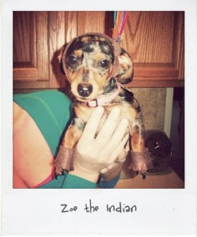
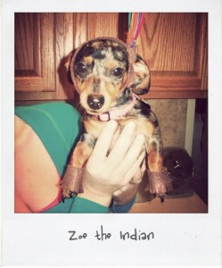

Here they are showing off their handmade costumes. Can’t you just see the pride gleaming from their eyes.


Happy Halloween! Love, Zoe and Luca

Here they are showing off their handmade costumes. Can’t you just see the pride gleaming from their eyes.

Happy Halloween! Love, Zoe and Luca
(in no particular order)
Or maybe we just like this movie because of this scene–if you want scary read the book. What’s your favorite scary movie?
Happy Halloween Everyone!
When I found out I was having a boy, I knew what I didn’t want in a nursery. I didn’t want pastels, I didn’t want typical. What I did want was his nursery to look like it belonged to the rest of our house which is colorful and eclectic.

I had seen, at a local antique show, a slew of owls painted on some weathered fence boards and immediately wanted it for my son’s nursery however it was a GAZILLION dollars, so I set out to make it and therein came the theme for my son’s room: owls. I read somewhere after I picked that theme that owls bring good luck, wisdom, and watchful protection to your home–LOVED IT!
My hunt for owls then returned the Flights of Fancy Mobile, which just embodied the colorfulness that I wanted. From there I wanted unique animals and found the Dodo Bird print, Pongo (who I loved so much I framed him) and Magnus.

Sometimes Zoe and Luca get the shivers and that’s when I run to the rescue with a dog sweater or a dog coat. Sure, they may be shivering because they see me with these items in hand, but I like to pretend they’ve got the chills. Here are some of the cutest dog chill preventers (or inducers) around.
Are you dressing up your wee one this Halloween? You know, the one that probably hasn’t even had candy yet, but so you can take him around your neighborhood and get yourself candy? Or are you going to spend the money on a costume for one Halloween picture? Either way, I have found some TURBO cute costumes that are sure to drive the little one INSANE what with all the stuff around his face and making it difficult to walk and all. But GOOD LORD they are cute, aren’t they? I think it’s a tie for me between the Masked Owl and the Roast Turkey…mmmmhmmm baby toes!!
I’m usually a beer girl, but every now and then I like to dive into a fruity and delicious cocktail. One problemo folks… fruity cocktails have about, and I’m roughly estimating here, a zillion calories. I’ve come up with a solution… and get ready because this is going to blow you away the first time you try it.
Step one: Order yourself a vodka and one of the following: soda, tonic, or water. ( I prefer soda because I’m a fizzy drink type of gal)
Step two: Have already smuggled in a Crystal Light  sugar free single serving drink mix packet in your purse. (Here at Tipsy Society these are called crack water packets.. well, because they are addictive, highly addictive)
Step three: Mix ordered drink with crack water packet and consume with complete and utter glee.

When my little boy was a tiny baby, he had a hat on his head wherever we went. I loved me some baby hats. My dad told me, if I didn’t stop putting hats on him, his hair wouldn’t grow. Blagh! On a related note, my 1 yr old is just starting to get some hair on his noggin.
Who says a small fry can’t be cool? Dinosaurs? Check! Robots? Check! Slightly Business Casual? Check Check?

Have you ever left your kid in their PJs all day because they just look so DAMN cute??? Yeah I haven’t done that either…that would be so wrong.


{kind=link}
{kind=link}
Recent Comments